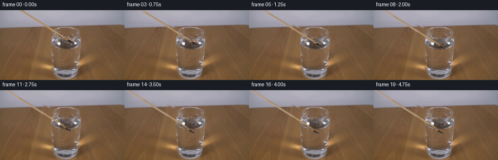
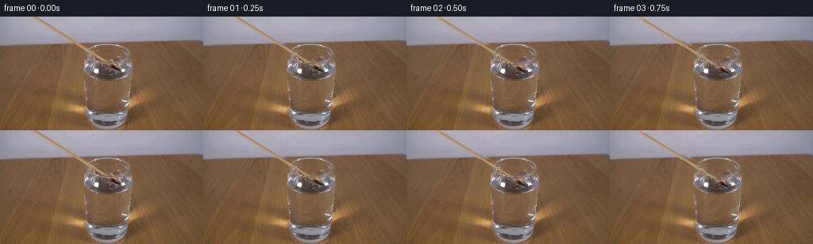
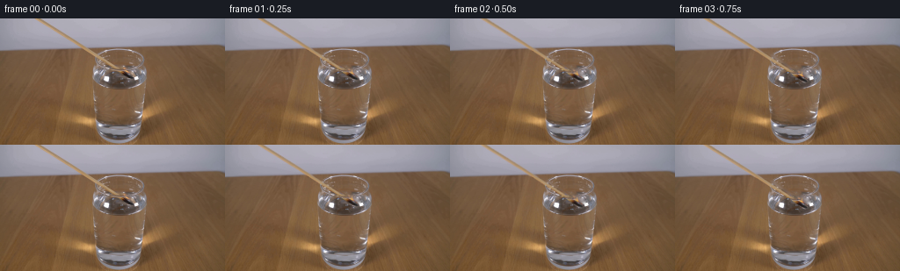

CODING AGENTS AS PIXEL WORLD MODELS
traex/GPT-6.1-Sol · 0110
点击播放 · 原生 RGB 像素
逐轮保存的候选
回放视频、检查图与代码变化。
每份候选均可单独播放。实际图片检查记录在下方工具轨迹中。
候选 01播放与检查图
点击播放 · 原生 RGB 像素


展开代码变化
--- 上一保存版本
+++ 本次保存版本
@@ -0,0 +1,146 @@
+from pathlib import Path
+import numpy as np
+from PIL import Image
+import cv2
+from scipy.ndimage import gaussian_filter
+import artifact_io
+
+ROOT=Path(__file__).resolve().parent
+H,W=144,256
+Y,X=np.mgrid[:H,:W].astype(np.float32)
+original=np.asarray(Image.open(ROOT/'first_frame.png').convert('RGB')).astype(np.float32)
+slope=1.604
+intercept=42.48
+normal=(X-intercept-slope*Y)/np.sqrt(1+slope*slope)
+
+# A very narrow clean plate: all the stationary photographic glass and table
+# are retained. Only the moving wooden splint, its head, and flame are removed.
+shaft=(np.abs(normal)<2.9)&(Y<60)
+mask=shaft.astype(np.uint8)*255
+cv2.fillPoly(mask,[np.array([(133,57),(137,58),(142,60),(147,63),(152,67),(149,70),(143,67),(138,63),(134,60)],np.int32)],255)
+cv2.fillPoly(mask,[np.array([(139,53),(143,54),(147,59),(148,63),(144,64),(140,60),(138,57)],np.int32)],255)
+# The little warm reflection next to the burning head.
+cv2.fillPoly(mask,[np.array([(146,60),(152,61),(155,64),(154,66),(149,65),(146,63)],np.int32)],255)
+clean=cv2.inpaint(original.astype(np.uint8),mask,4,cv2.INPAINT_TELEA).astype(np.float32)
+
+# Subpixel alpha of the splint, derived from its geometric cylindrical outline.
+wood_alpha=np.clip((2.35-np.abs(normal))/.83,0,1)*np.clip((60.2-Y)/2.0,0,1)
+head_alpha=np.zeros((H,W),np.uint8)
+cv2.fillPoly(head_alpha,[np.array([(133,58),(136,58),(141,60),(146,62),(151,66),(150,68),(148,69),(144,67),(140,64),(137,62)],np.int32)],255)
+head_alpha=gaussian_filter(head_alpha.astype(np.float32)/255,.45)
+body_alpha=np.maximum(wood_alpha,head_alpha)
+# Unmatte original texture against the clean plate, avoiding transported background.
+body_rgb=np.clip(clean+(original-clean)/np.maximum(body_alpha[...,None],.08),0,255)
+# Supplement a fractional-pixel edge with the actual nearby wooden colour.
+# The charred head is taken directly from the photograph, not a stylized icon.
+
+flame_mask=np.zeros((H,W),np.uint8)
+cv2.fillPoly(flame_mask,[np.array([(139,54),(143,54),(147,59),(148,62),(144,63),(140,60),(139,58)],np.int32)],255)
+flame_a=gaussian_filter(flame_mask.astype(np.float32)/255,.55)
+flame_delta=(original-clean)*flame_a[...,None]
+flame_delta=np.maximum(flame_delta,0)
+# Only the light of the flame, not neighbouring photographic rim marks.
+flame_delta*=np.clip((original[:,:,0]-original[:,:,2]-22)/45,0,1)[...,None]
+
+# Extend the off-screen part of the match with the photographed cross-section.
+# Translation exposes a few millimetres that were above the top edge.
+pad=48
+padded_rgb=np.pad(body_rgb,((pad,0),(0,0),(0,0)),mode='edge')
+padded_alpha=np.pad(body_alpha,((pad,0),(0,0)),mode='constant')
+for row in range(pad):
+ sy=row-pad
+ cx=intercept+slope*sy
+ d=(np.arange(W)-cx)/np.sqrt(1+slope*slope)
+ a=np.clip((2.35-np.abs(d))/.83,0,1)
+ padded_alpha[row]=a
+ sx=np.arange(W)-slope*sy
+ padded_rgb[row]=np.stack([np.interp(sx,np.arange(W),body_rgb[2,:,c]) for c in range(3)],-1)
+
+# Stable photographic highlights lie on the front of the glass.
+front_glints=np.clip((original.mean(2)-190)/55,0,1)
+front_glints*=((Y>64)&(Y<125)&(X>104)&(X<168))
+water_y=70.5
+
+def overlay(base,rgb,a):
+ return base*(1-a[...,None])+rgb*a[...,None]
+
+def frame_at(t):
+ # A controlled real-time lowering, then the immersed match is held still.
+ u=np.clip(t/3.7,0,1)
+ # ease the start and finish without unnatural mid-motion stops
+ dy=21.2*(u-.13*np.sin(2*np.pi*u)/(2*np.pi))
+ dx=-4.3*(dy/21.2)
+ # Contact points follow the sloping shaft through the water surface.
+ entry_x=intercept+slope*(water_y-dy)+dx
+ depth=np.maximum(0,Y-water_y)
+ refraction=.86
+ local_x=np.where(Y>water_y,entry_x+(X-entry_x)/refraction,X)
+ mapx=(local_x-dx).astype(np.float32)
+ mapy=(Y-dy+pad).astype(np.float32)
+ rgb=cv2.remap(padded_rgb,mapx,mapy,cv2.INTER_LINEAR,borderMode=cv2.BORDER_CONSTANT)
+ a=cv2.remap(padded_alpha,mapx,mapy,cv2.INTER_LINEAR,borderMode=cv2.BORDER_CONSTANT)
+ # Through water, the wet wood loses saturation/contrast very slightly.
+ submerged=np.clip((Y-water_y)/2,0,1)
+ a*=1-.19*submerged
+ a*=1-.88*front_glints
+ f=overlay(clean.copy(),rgb,a)
+
+ tip_y=65.4+dy
+ # Flame survives in air only; rapid quenching as the matchhead meets water.
+ burning=np.clip((71.0-tip_y)/1.35,0,1)
+ if burning>0:
+ # Warm source flame, delicately flickering rather than rigidly sliding.
+ flicker=.23*np.sin(t*19)+.15*np.sin(t*31)
+ fx=(X-dx-flicker).astype(np.float32)
+ fy=(Y-dy+.15*np.sin(t*16)).astype(np.float32)
+ flame=cv2.remap(flame_delta,fx,fy,cv2.INTER_LINEAR,borderMode=cv2.BORDER_CONSTANT)
+ f+=flame*burning*(.91+.15*np.sin(t*21))
+ # A narrow yellow-white interior and soft amber halo; camera-scale real flame.
+ bx=145.1+dx
+ by=61.6+dy
+ h=7.5+.55*np.sin(t*17)
+ v=(by-Y)/h
+ width=(.65+1.04*np.sin(np.pi*np.clip(v,0,1)))*np.clip(1-v,.08,1)
+ centre=bx+.35*np.sin(t*15+v*4)-1.25*v
+ z=np.clip((width-np.abs(X-centre))/.8,0,1)*np.clip(v*8,0,1)*np.clip((1-v)*8,0,1)
+ z=gaussian_filter(z,.32)*.46*burning
+ fire_color=np.zeros_like(f); fire_color[:]=[250,185,84]
+ # Additive luminance mixing keeps the very small flame soft and transparent.
+ f=overlay(f,fire_color,z)
+ halo=np.exp(-(((X-bx)/3.1)**2+((Y-(by-3.0))/4.5)**2))*burning*.075
+ f+=halo[...,None]*np.array([100,44,8])
+
+ # Small capillary ripples from gentle dipping, with no splash or large waves.
+ if tip_y>70.2:
+ elapsed=max(0,t-.94)
+ strength=np.clip(dy/21.2,0,1)
+ if t>3.7:strength*=np.exp(-(t-3.7)*2.0)
+ surfmask=np.exp(-((Y-water_y)/5.2)**8)*((X>108)&(X<162))
+ wave=np.zeros((H,W),np.float32)
+ for age in [elapsed%1.08,(elapsed+.52)%1.08]:
+ radius=2.2+age*9.0
+ r=np.sqrt((X-entry_x)**2+((Y-water_y)/.30)**2)
+ ring=np.exp(-((r-radius)/.58)**2)
+ echo=np.exp(-((r-radius-.9)/.7)**2)
+ wave+=(ring-echo*.65)*np.exp(-age*2.3)
+ f+=wave[...,None]*surfmask[...,None]*strength*np.array([8,7,6])
+ # Contact meniscus, less than two pixels, follows the splint.
+ line=np.exp(-((X-entry_x)/2.0)**2-((Y-water_y)/.48)**2)*strength
+ f+=line[...,None]*np.array([11,10,8])
+
+ # A tiny transient translucent wisp at extinction dissipates upwards in air.
+ if .9<t<1.95:
+ age=t-.9
+ opacity=.13*np.sin(np.pi*age/1.05)*np.exp(-age)
+ sx=144.0+dx+1.2*np.sin(age*3)
+ sy=69-age*8
+ smoke=np.exp(-((X-sx)/(.7+age*1.4))**2-((Y-sy)/(1.1+age*2.0))**2)*opacity
+ smoke+=np.exp(-((X-sx-.8)/(.65+age))**2-((Y-sy+2)/(1.4+age*2))**2)*opacity*.4
+ f=overlay(f,np.full_like(f,[153,149,145]),smoke)
+ return np.clip(np.rint(f),0,255).astype(np.uint8)
+
+frames=np.stack([original.astype(np.uint8)]+[frame_at(i/4) for i in range(1,20)])
+artifact_io.save(frames,ROOT)
+Image.fromarray(clean.astype(np.uint8)).save(ROOT/'.tmp/clean.png')
+Image.fromarray((body_alpha*255).astype(np.uint8)).save(ROOT/'.tmp/match_alpha.png')
+print('Saved',frames.shape,frames.dtype,'first frame exact:',np.array_equal(frames[0],original.astype(np.uint8)))
候选 02播放与检查图
点击播放 · 原生 RGB 像素

展开代码变化
--- 上一保存版本 +++ 本次保存版本 @@ -22,6 +22,18 @@ # The little warm reflection next to the burning head. cv2.fillPoly(mask,[np.array([(146,60),(152,61),(155,64),(154,66),(149,65),(146,63)],np.int32)],255) clean=cv2.inpaint(original.astype(np.uint8),mask,4,cv2.INPAINT_TELEA).astype(np.float32) +# Above the rim this is an unfocused, horizontally continuous background. +# Row-wise reconstruction avoids dragging the table/background boundary into +# the diagonal inpainting corridor. +for row in range(38): + cx=intercept+slope*row + left=int(np.floor(cx-8)); right=int(np.ceil(cx+8)) + left=max(0,left); right=min(W-1,right) + xx=np.arange(left+1,right) + weight=(xx-left)/(right-left) + vals=original[row,left][None,:]*(1-weight[:,None])+original[row,right][None,:]*weight[:,None] + use=mask[row,xx]>0 + clean[row,xx[use]]=vals[use] # Subpixel alpha of the splint, derived from its geometric cylindrical outline. wood_alpha=np.clip((2.35-np.abs(normal))/.83,0,1)*np.clip((60.2-Y)/2.0,0,1) @@ -53,7 +65,7 @@ d=(np.arange(W)-cx)/np.sqrt(1+slope*slope) a=np.clip((2.35-np.abs(d))/.83,0,1) padded_alpha[row]=a - sx=np.arange(W)-slope*sy + sx=np.arange(W)-slope*sy+slope*2 padded_rgb[row]=np.stack([np.interp(sx,np.arange(W),body_rgb[2,:,c]) for c in range(3)],-1) # Stable photographic highlights lie on the front of the glass.
可观测工具轨迹
实际执行的命令与返回图片。
命令 1exit 0
/bin/bash -lc 'ls -la && cat prompt.txt && cat GENERATION_RULES.md'
命令 2exit 0
/bin/bash -lc "cat artifact_io.py && python - <<'PY'
from PIL import Image
import numpy as np
im=np.array(Image.open('first_frame.png'))
print(im.shape)
print('range',im.min((0,1)), im.max((0,1)))
# ASCII luminance
im=Image.open('first_frame.png').convert('L').resize((128,72))
a=np.array(im); chars=' .,:;irsX253hMHGS#9B&@'
for r in a: print(''.join(chars[int(v)*len(chars)//256] for v in r))
PY"命令 3exit 0
/bin/bash -lc "python - <<'PY'
import numpy as np
from PIL import Image
im=np.asarray(Image.open('first_frame.png')).astype(int)
# RGB summaries and bright/warm color clusters
for y in range(0,144,4):
line=''
for x in range(0,256,2):
r,g,b=im[y:y+4,x:x+2].mean((0,1)); mx=max(r,g,b);mn=min(r,g,b)
if r>200 and g>190 and b>150: c='W'
elif r>150 and r>g*1.25 and g>b*1.2:c='F'
elif r>100 and r>g*1.18:c='o'
elif mx-mn<12:c='.' if mx>160 else (':' if mx>90 else '_')
elif b>r+10:c='B'
elif r>g+10:c='t'
else:c='-'
line+=c
print(f'{y:3} {line}')
print('bright warm coords')
mask=(im[:,:,0]>190)&((im[:,:,0]-im[:,:,2])>45)
ys,xs=np.where(mask)
print(len(xs), list(zip(xs[::max(1,len(xs)//80)],ys[::max(1,len(xs)//80)])))
# detailed lum for crop match and top glass
chars=' .:-=+*#%@'
gray=np.dot(im,[.2126,.7152,.0722]);
for y in range(25,86):
print(f'{y:3}', ''.join(chars[min(9,int(v)*10//256)] for v in gray[y,75:169]))
PY"命令 4exit 0
/bin/bash -lc "python - <<'PY'
from PIL import Image
import numpy as np
im=np.array(Image.open('first_frame.png')).astype(int)
# RGB table at tip
for y in range(49,76):
print('y',y,' '.join('%d:%02x%02x%02x'% (x,*im[y,x]) for x in range(123,155)))
# saturated bright list about match/flame
for y in range(25,66):
pts=[(x,tuple(im[y,x])) for x in range(65,169) if im[y,x,0]>im[y,x,2]+20 and im[y,x,0]>140]
print(y,pts)
PY"命令 5exit 0
/bin/bash -lc "python - <<'PY'
import numpy as np
from PIL import Image
from scipy.ndimage import label
im=np.array(Image.open('first_frame.png')).astype(int)
for labelname,mask in [('white',(im[:,:,0]>230)&(im[:,:,1]>220)&(im[:,:,2]>200)),('dark',(im[:,:,0]<60)&(im[:,:,1]<45)&(im[:,:,2]<45))]:
labels,n=label(mask)
print(labelname)
for i in range(1,n+1):
yy,xx=np.where(labels==i)
if len(xx)>3: print(len(xx),'x',xx.min(),xx.max(),'y',yy.min(),yy.max(),'center',xx.mean(),yy.mean())
print('Match side profiles y<30')
for y in [0,5,10,15,20,25,30]:
x=int(43.5+1.56*y)
print(y,[(j,tuple(im[y,j])) for j in range(x-8,x+9)])
PY"命令 6exit 0
/bin/bash -lc "python - <<'PY'
import numpy as np
from PIL import Image
im=np.array(Image.open('first_frame.png')).astype(float)
lum=im.mean(2)
for y in [32,34,35,36,37,38,39,40,42,44,46,48,50,54,56,58,60,66,70,74,78,80,85,90,95,100,105,110,115,120,125,130,135,140]:
peaks=[x for x in range(60,181) if lum[y,x]>145 and (x<110 or x>133)]
print(y, 'lum maxima ',sorted([(round(lum[y,x]),x) for x in range(65,180)], reverse=True)[:12], 'peaks',peaks)
# ascii one char per 1px entire image every 2 rows
chars=' .:-=+*#%@'
for y in range(30,144,2):
print(f'{y:3}',''.join(chars[min(9,int(v)*10//256)] for v in lum[y,65:180]))
PY"命令 7exit 0
/bin/bash -lc "python - <<'PY'
from PIL import Image
import numpy as np
im=np.array(Image.open('first_frame.png')).astype(float)
# show match-relative RGB custom classes for each px, 50-75 y, 120-165 x
for y in range(46,83):
s=''
for x in range(103,169):
r,g,b=im[y,x]; v=(r+g+b)/3
if v>235:c='@'
elif v>200:c='W'
elif r>170 and r-g>25 and g-b>30:c='F'
elif r-g>22 and g-b>25 and r>150:c='w'
elif v<33:c='X'
elif v<50:c='o'
elif v<70:c=':'
elif v<90:c='-'
elif v<115:c='='
elif v<140:c='+'
elif v<165:c='*'
else:c='#'
s+=c
print(y,s)
print('x coords', ''.join(str(x//10%10) for x in range(103,169)))
print('x coords', ''.join(str(x%10) for x in range(103,169)))
PY"命令 8exit 0
/bin/bash -lc "python - <<'PY'
import cv2, scipy, numpy
print('cv2',cv2.__version__)
PY"命令 9exit 0
/bin/bash -lc "python - <<'PY'
from PIL import Image
import numpy as np
im=np.array(Image.open('first_frame.png')).astype(float)
ys=[];xs=[]
for y in range(0,58):
pred=42.6+1.61*y
x=np.arange(max(0,int(pred-6)),min(256,int(pred+7)))
vals=im[y,x]; w=(vals[:,0]-vals[:,2]-5).clip(0)
if y<33:w=(vals[:,0]-vals[:,2]-8).clip(0)
else:w=(vals.mean(1)-105).clip(0)
xs.append((x*w).sum()/w.sum());ys.append(y)
print(np.polyfit(ys[:33],xs[:33],1))
for y in range(0,58,3): print(y,round(xs[y],2))
PY"命令 10exit 0
/bin/bash -lc "cat > generate.py <<'PY'
from pathlib import Path
import numpy as np
from PIL import Image
import cv2
from scipy.ndimage import gaussian_filter
import artifact_io
ROOT=Path(__file__).resolve().parent
H,W=144,256
Y,X=np.mgrid[:H,:W].astype(np.float32)
original=np.asarray(Image.open(ROOT/'first_frame.png').convert('RGB')).astype(np.float32)
slope=1.604
intercept=42.48
normal=(X-intercept-slope*Y)/np.sqrt(1+slope*slope)
# A very narrow clean plate: all the stationary photographic glass and table
# are retained. Only the moving wooden splint, its head, and flame are removed.
shaft=(np.abs(normal)<2.9)&(Y<60)
mask=shaft.astype(np.uint8)*255
cv2.fillPoly(mask,[np.array([(133,57),(137,58),(142,60),(147,63),(152,67),(149,70),(143,67),(138,63),(134,60)],np.int32)],255)
cv2.fillPoly(mask,[np.array([(139,53),(143,54),(147,59),(148,63),(144,64),(140,60),(138,57)],np.int32)],255)
# The little warm reflection next to the burning head.
cv2.fillPoly(mask,[np.array([(146,60),(152,61),(155,64),(154,66),(149,65),(146,63)],np.int32)],255)
clean=cv2.inpaint(original.astype(np.uint8),mask,4,cv2.INPAINT_TELEA).astype(np.float32)
# Subpixel alpha of the splint, derived from its geometric cylindrical outline.
wood_alpha=np.clip((2.35-np.abs(normal))/.83,0,1)*np.clip((60.2-Y)/2.0,0,1)
head_alpha=np.zeros((H,W),np.uint8)
cv2.fillPoly(head_alpha,[np.array([(133,58),(136,58),(141,60),(146,62),(151,66),(150,68),(148,69),(144,67),(140,64),(137,62)],np.int32)],255)
head_alpha=gaussian_filter(head_alpha.astype(np.float32)/255,.45)
body_alpha=np.maximum(wood_alpha,head_alpha)
# Unmatte original texture against the clean plate, avoiding transported background.
body_rgb=np.clip(clean+(original-clean)/np.maximum(body_alpha[...,None],.08),0,255)
# Supplement a fractional-pixel edge with the actual nearby wooden colour.
# The charred head is taken directly from the photograph, not a stylized icon.
flame_mask=np.zeros((H,W),np.uint8)
cv2.fillPoly(flame_mask,[np.array([(139,54),(143,54),(147,59),(148,62),(144,63),(140,60),(139,58)],np.int32)],255)
flame_a=gaussian_filter(flame_mask.astype(np.float32)/255,.55)
flame_delta=(original-clean)*flame_a[...,None]
flame_delta=np.maximum(flame_delta,0)
# Only the light of the flame, not neighbouring photographic rim marks.
flame_delta*=np.clip((original[:,:,0]-original[:,:,2]-22)/45,0,1)[...,None]
# Extend the off-screen part of the match with the photographed cross-section.
# Translation exposes a few millimetres that were above the top edge.
pad=48
padded_rgb=np.pad(body_rgb,((pad,0),(0,0),(0,0)),mode='edge')
padded_alpha=np.pad(body_alpha,((pad,0),(0,0)),mode='constant')
for row in range(pad):
sy=row-pad
cx=intercept+slope*sy
d=(np.arange(W)-cx)/np.sqrt(1+slope*slope)
a=np.clip((2.35-np.abs(d))/.83,0,1)
padded_alpha[row]=a
sx=np.arange(W)-slope*sy
padded_rgb[row]=np.stack([np.interp(sx,np.arange(W),body_rgb[2,:,c]) for c in range(3)],-1)
# Stable photographic highlights lie on the front of the glass.
front_glints=np.clip((original.mean(2)-190)/55,0,1)
front_glints*=((Y>64)&(Y<125)&(X>104)&(X<168))
water_y=70.5
def overlay(base,rgb,a):
return base*(1-a[...,None])+rgb*a[...,None]
def frame_at(t):
# A controlled real-time lowering, then the immersed match is held still.
u=np.clip(t/3.7,0,1)
# ease the start and finish without unnatural mid-motion stops
dy=21.2*(u-.13*np.sin(2*np.pi*u)/(2*np.pi))
dx=-4.3*(dy/21.2)
# Contact points follow the sloping shaft through the water surface.
entry_x=intercept+slope*(water_y-dy)+dx
depth=np.maximum(0,Y-water_y)
refraction=.86
local_x=np.where(Y>water_y,entry_x+(X-entry_x)/refraction,X)
mapx=(local_x-dx).astype(np.float32)
mapy=(Y-dy+pad).astype(np.float32)
rgb=cv2.remap(padded_rgb,mapx,mapy,cv2.INTER_LINEAR,borderMode=cv2.BORDER_CONSTANT)
a=cv2.remap(padded_alpha,mapx,mapy,cv2.INTER_LINEAR,borderMode=cv2.BORDER_CONSTANT)
# Through water, the wet wood loses saturation/contrast very slightly.
submerged=np.clip((Y-water_y)/2,0,1)
a*=1-.19*submerged
a*=1-.88*front_glints
f=overlay(clean.copy(),rgb,a)
tip_y=65.4+dy
# Flame survives in air only; rapid quenching as the matchhead meets water.
burning=np.clip((71.0-tip_y)/1.35,0,1)
if burning>0:
# Warm source flame, delicately flickering rather than rigidly sliding.
flicker=.23*np.sin(t*19)+.15*np.sin(t*31)
fx=(X-dx-flicker).astype(np.float32)
fy=(Y-dy+.15*np.sin(t*16)).astype(np.float32)
flame=cv2.remap(flame_delta,fx,fy,cv2.INTER_LINEAR,borderMode=cv2.BORDER_CONSTANT)
f+=flame*burning*(.91+.15*np.sin(t*21))
# A narrow yellow-white interior and soft amber halo; camera-scale real flame.
bx=145.1+dx
by=61.6+dy
h=7.5+.55*np.sin(t*17)
v=(by-Y)/h
width=(.65+1.04*np.sin(np.pi*np.clip(v,0,1)))*np.clip(1-v,.08,1)
centre=bx+.35*np.sin(t*15+v*4)-1.25*v
z=np.clip((width-np.abs(X-centre))/.8,0,1)*np.clip(v*8,0,1)*np.clip((1-v)*8,0,1)
z=gaussian_filter(z,.32)*.46*burning
fire_color=np.zeros_like(f); fire_color[:]=[250,185,84]
# Additive luminance mixing keeps the very small flame soft and transparent.
f=overlay(f,fire_color,z)
halo=np.exp(-(((X-bx)/3.1)**2+((Y-(by-3.0))/4.5)**2))*burning*.075
f+=halo[...,None]*np.array([100,44,8])
# Small capillary ripples from gentle dipping, with no splash or large waves.
if tip_y>70.2:
elapsed=max(0,t-.94)
strength=np.clip(dy/21.2,0,1)
if t>3.7:strength*=np.exp(-(t-3.7)*2.0)
surfmask=np.exp(-((Y-water_y)/5.2)**8)*((X>108)&(X<162))
wave=np.zeros((H,W),np.float32)
for age in [elapsed%1.08,(elapsed+.52)%1.08]:
radius=2.2+age*9.0
r=np.sqrt((X-entry_x)**2+((Y-water_y)/.30)**2)
ring=np.exp(-((r-radius)/.58)**2)
echo=np.exp(-((r-radius-.9)/.7)**2)
wave+=(ring-echo*.65)*np.exp(-age*2.3)
f+=wave[...,None]*surfmask[...,None]*strength*np.array([8,7,6])
# Contact meniscus, less than two pixels, follows the splint.
line=np.exp(-((X-entry_x)/2.0)**2-((Y-water_y)/.48)**2)*strength
f+=line[...,None]*np.array([11,10,8])
# A tiny transient translucent wisp at extinction dissipates upwards in air.
if .9<t<1.95:
age=t-.9
opacity=.13*np.sin(np.pi*age/1.05)*np.exp(-age)
sx=144.0+dx+1.2*np.sin(age*3)
sy=69-age*8
smoke=np.exp(-((X-sx)/(.7+age*1.4))**2-((Y-sy)/(1.1+age*2.0))**2)*opacity
smoke+=np.exp(-((X-sx-.8)/(.65+age))**2-((Y-sy+2)/(1.4+age*2))**2)*opacity*.4
f=overlay(f,np.full_like(f,[153,149,145]),smoke)
return np.clip(np.rint(f),0,255).astype(np.uint8)
frames=np.stack([original.astype(np.uint8)]+[frame_at(i/4) for i in range(1,20)])
artifact_io.save(frames,ROOT)
Image.fromarray(clean.astype(np.uint8)).save(ROOT/'.tmp/clean.png')
Image.fromarray((body_alpha*255).astype(np.uint8)).save(ROOT/'.tmp/match_alpha.png')
print('Saved',frames.shape,frames.dtype,'first frame exact:',np.array_equal(frames[0],original.astype(np.uint8)))
PY
python generate.py"命令 11exit 0
/bin/bash -lc "python - <<'PY'
import numpy as np
from PIL import Image
im=np.array(Image.open('first_frame.png')).astype(float)
clean=np.array(Image.open('.tmp/clean.png')).astype(float)
chars=' .:-=+*#%@'
for i in [0,1,4,8,14,19]:
a=np.array(Image.open(f'frames/{i:02}.png')).astype(float); lum=a.mean(2)
print('\\nFRAME',i)
for y in range(0,100,2):
print(f'{y:2}',''.join(chars[min(9,int(v)*10//256)] for v in lum[y,20:176]))
print('changed pixels',((a"'!=im).any(2)).sum(),'"'avg abs diff',np.abs(a-im).mean())
PY"命令 12exit 0
/bin/bash -lc "python - <<'PY'
import numpy as np
from PIL import Image
orig=np.array(Image.open('first_frame.png')).astype(int)
clean=np.array(Image.open('.tmp/clean.png')).astype(int)
for y in [0,10,20,28,30,32,34,40,50,58,60,64,66,68]:
x=int(42.48+1.604*y)
print('\\ny',y,'x',x)
for j in range(x-10,x+11):
print(j,tuple(orig[y,j]),tuple(clean[y,j]))
PY"命令 13exit 0
/bin/bash -lc "python generate.py && python - <<'PY'
from PIL import Image
import numpy as np
chars=' .:-=+*#%@'
for i in [0,1,3,4,5,8,19]:
a=np.array(Image.open(f'frames/{i:02}.png')); lum=a.mean(2)
print('\\nFRAME',i,'matchhead region')
for y in range(49,93):
print(f'{y:2}',''.join(chars[min(9,int(v)*10//256)] for v in lum[y,122:158]))
PY"命令 14exit 0
/bin/bash -lc "command -v ffmpeg || true; ls -lh pixels.npz index.html generate.py; python - <<'PY'
from pathlib import Path
import numpy as np
from PIL import Image
p=np.load('pixels.npz')['pixels']; print('packed RGB shape:',p.shape,p.dtype)
frames=np.stack([np.array(Image.open(f'frames/{i:02d}.png')) for i in range(20)])
assert frames.shape==(20,144,256,3)
assert frames.dtype==np.uint8
assert np.array_equal(frames[0],np.array(Image.open('first_frame.png')))
print('All required checks passed')
PY"保存候选 2 份；完成命令 14 次；可验证图片返回 0 张。原始 API 响应与完整日志保留在本地。